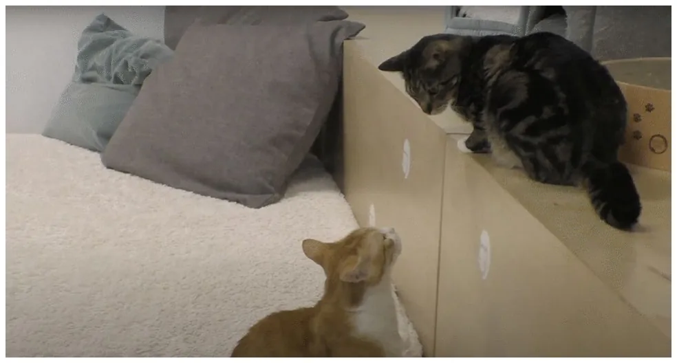
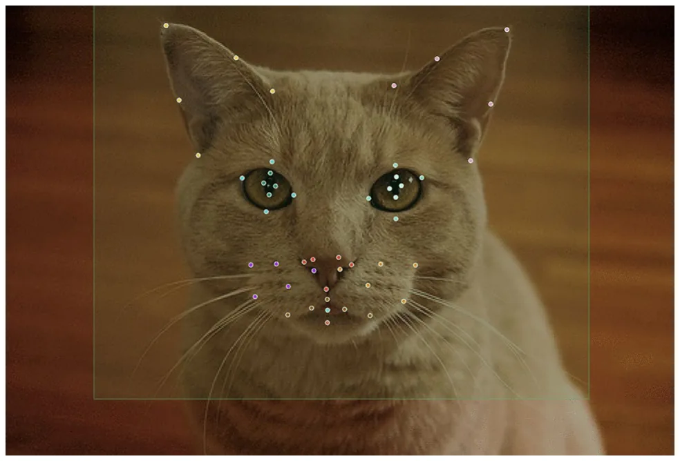
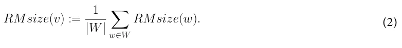
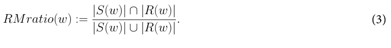
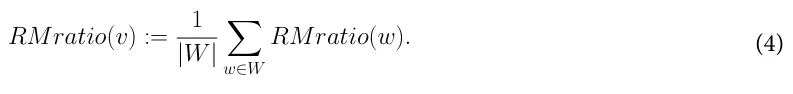
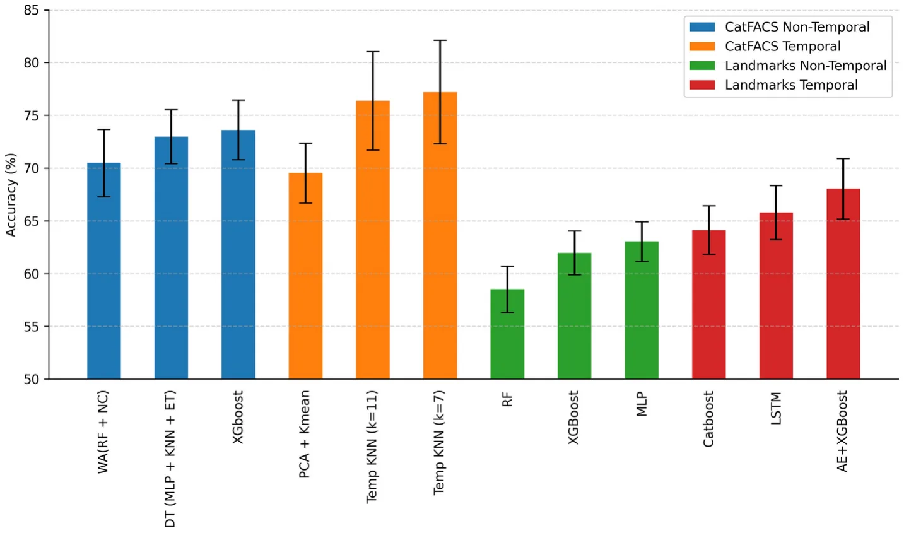
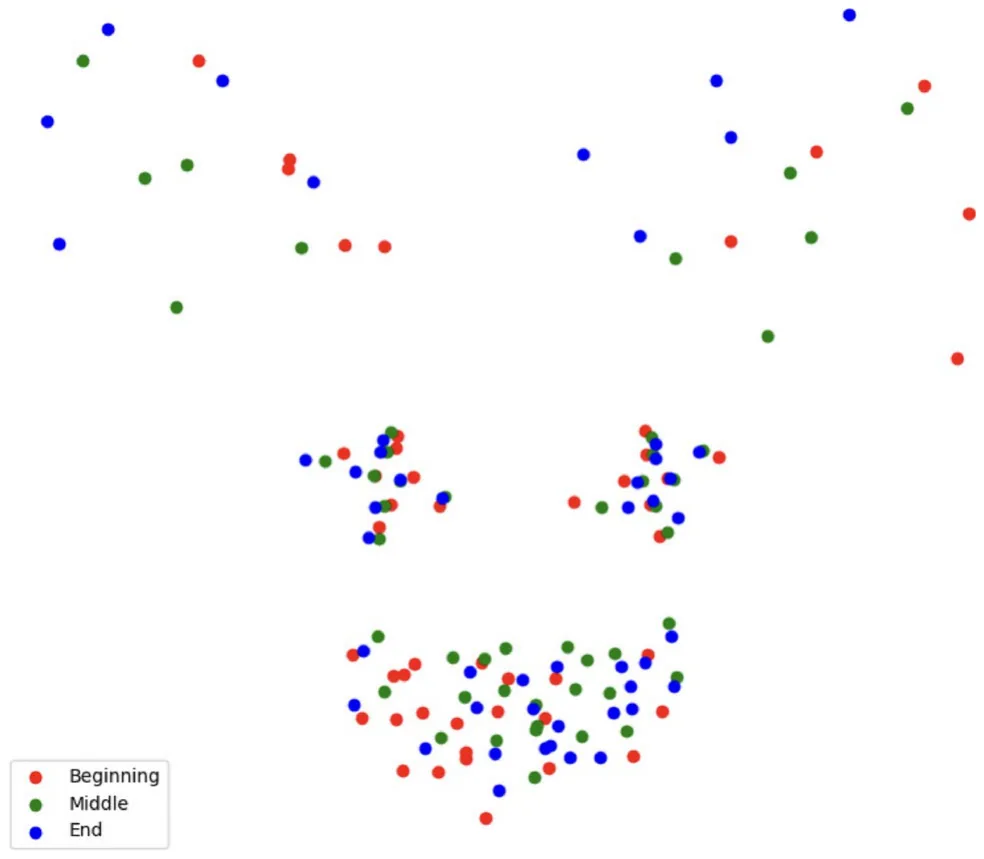
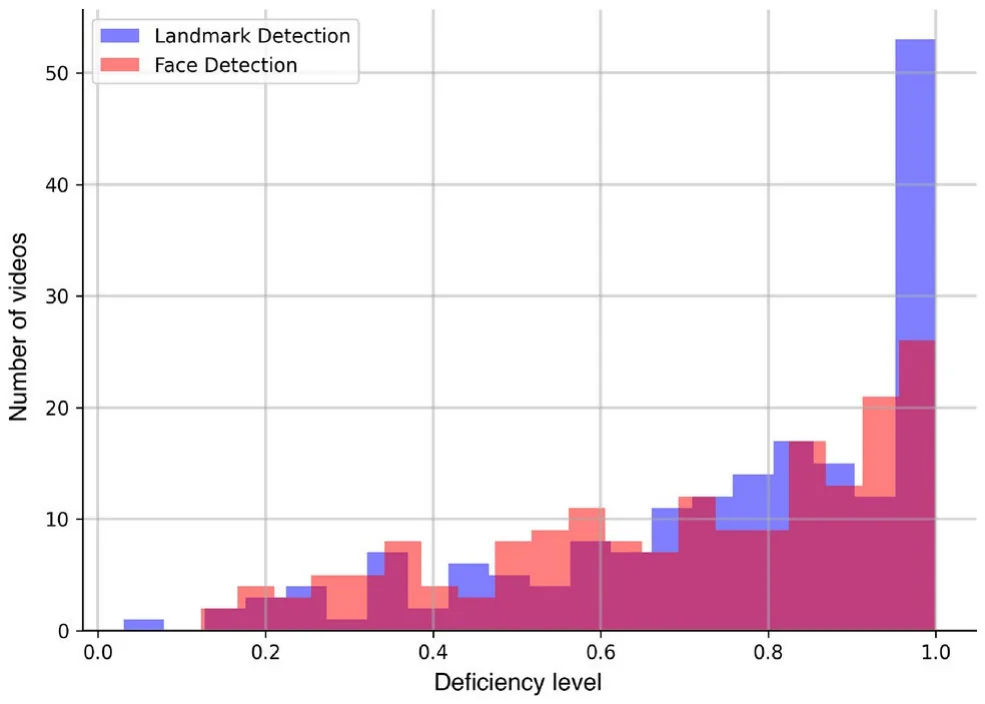
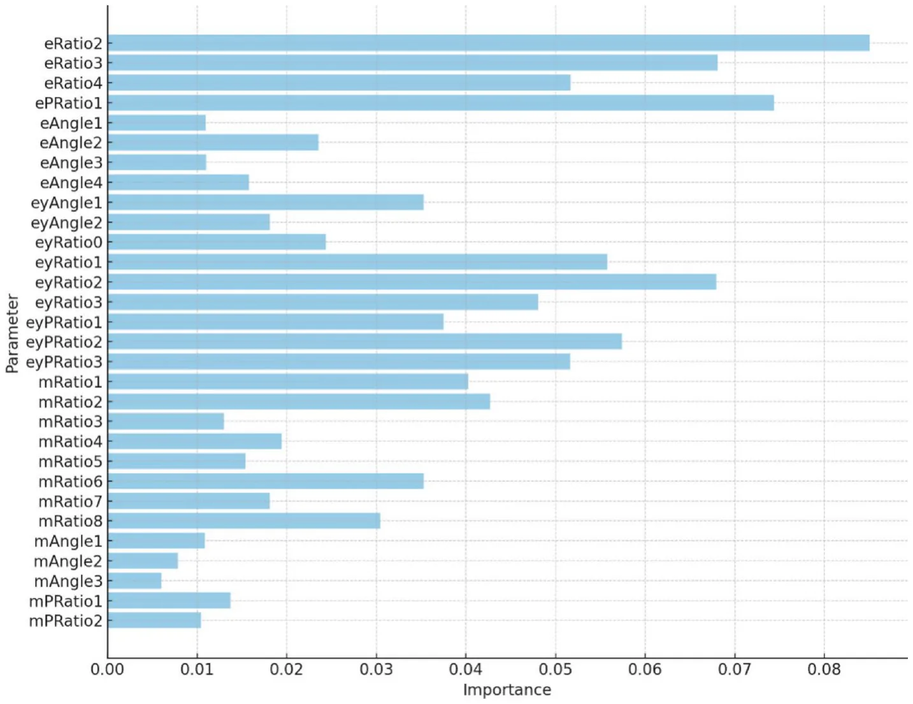
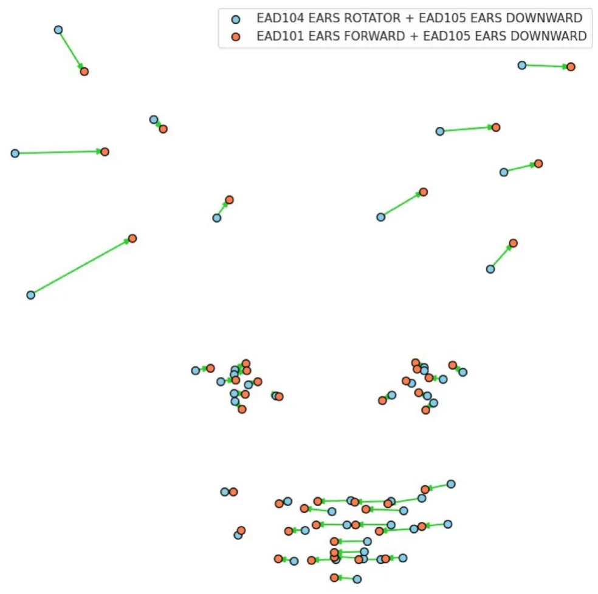

On this page
Abstract
There is growing interest in the facial signals of domestic cats. Domestication may have shifted feline social dynamics towards a greater emphasis on facial signals that promote affiliative bonding. Most studies have focused on cat facial signals during human interactions or in response to pain. Research on intraspecific facial communication in cats has predominantly examined non-affiliative social interactions. A recent study by Scott and Florkiewicz1 demonstrated significant differences between cats’ facial signals during affiliative and non-affiliative intraspecific interactions. This follow-up study applies computational approaches to make two main contributions. First, we develop a machine learning classifier for affiliative/non-affiliative interactions based on manual CatFACS codings and automatically detected facial landmarks, reaching above 77% in CatFACS codings and 68% in landmarks by integrating a temporal dimension. Secondly, we introduce novel measures for rapid facial mimicry based on CatFACS coding. Our analysis suggests that domestic cats exhibit more rapid facial mimicry in affiliative contexts than non-affiliative ones, which is consistent with the proposed function of mimicry. Moreover, we found that ear movements (such as EAD103 and EAD104) are highly prone to rapid facial mimicry. Our research introduces new possibilities for analyzing cat facial signals and exploring shared moods with innovative AI-based approaches.
Most mammals produce facial signals2,3, facilitated by their cranial structure, which consists of unique features4and complex facial musculature5. These signals vary in their physical form and social function, playing a crucial role in mammalian social interactions. For instance, mammals use facial mimicry to facilitate complex social activities that are essential for managing long-term social bonds6. Facial mimicry is the matching of a facial signal of another individual shortly after viewing it7–15. Several studies have demonstrated links between facial mimicry, emotion recognition, and emotional contagion10,16. As a result, some researchers suggest that facial mimicry may be an evolutionary precursor to empathy in humans17. Many studies on facial mimicry have further focused on the facial signals that are rapidly produced during bouts of play7,9,12–14,18–20. Previous research has identified two distinct dimensions of facial mimicry. First, facial signals can be mirrored either exactly or based on types (i.e., pre-existing categories of facial signals7,15). For example, an individual may mirror all facial movements produced by another (exact mirroring) during play or just key facial movements associated with play faces (type mirroring). Second, facial signals can be mirrored either rapidly (within 1 second or less of viewing) or with a delay (>1 second of viewing13). Rapid facial mirroring is crucial for social bonding and has been found to extend affiliative interactions13. Delayed facial mirroring is rare and often occurs during later stages of social interactions13. Facial mimicry has been observed in multiple primate7,9,13,14,18,19and carnivore12,15 species.
The facial signals of domesticated cats (Felis catus) are receiving increased attention in the context of facial signaling for several reasons. First of all, due to selective breeding by humans21–23, facial features of domesticated cats vary, resulting in a greater number of breed types and diversity of morphological features24. Second, cats also produce many different facial signals at the species level, some of which have been systematically captured by focusing on individual facial movements (that are combined to create a signal25). Discrete facial movements have been associated with fear, frustration, relaxed engagement, and pain26–28among domesticated cats. Due to the complex social organization and communication of cats29, those signals play an important role within cat colonies. Interactions between animals depend on social roles30, and the facial signals could show the nature of such interactions31.
To date, most studies addressing facial signaling in cats focus on pain32–34. For example, the Feline Grimace Scale (FGS27) is a validated instrument for cat pain assessment. The FGS was further evaluated in Evangelista et al35,36., indicating the reliability of using images as compared to direct, real-time observations and agreement across scorers with different backgrounds and experience. Yet such facial analysis instruments are task-dependant and rely on the researcher’s subjective judgments, which may influence their reliability and validity. This leads to the need for the development of more objective methods for facial analysis, which use a unified system applicable to different breeds and individuals.
The Facial Action Coding System (FACS)37, is one of the most commonly used methods for objectively analyzing changes in facial movements related to human emotions38,39or facial mimicry40–42. Annotators are trained to identify facial movements produced in a signal with equal emphasis on each movement using FACS. Each facial movement is a variable (action unit or action descriptor), and each facial signal is created using a combination of variables. FACS has recently been extended to other animals (AnimalFACS), including non-human primates, as well as horses, dogs, and cats25,43–47. For instance, Scott and Florkiewicz1 used the CatFACS to study intraspecific social interactions in cats. They examined the number and types of facial movements and action units (AUs) observed in a facial signal to measure its complexity and compositionality in affiliative and non-affiliative contexts. It was found that compositionality, rather than complexity, was significantly associated with the social function of intraspecific facial signals, meaning that the combinations of specific facial movements could be typical to different interaction contexts and possibly characterize them.
One alternative approach for animal facial analysis is the use of geometric morphometrics48,49, where specific points (landmarks) are placed onto images to represent the shape of the animal’s face. Geometric morphometric placements are associated with their relative locations, and differences in these positions are indicators of shape variation. Finka et al50. applied such an approach to analyze facial shape change associated with pain in domestic short-haired cats. A scheme of 48 facial landmarks was developed, specifically chosen for their relationship with underlying musculature and relevance to cat-specific facial movements (using CatFACS). A notable correlation was found between facial shape changes related to pain and another validated tool for pain assessment (the UNESP-Botucatu MCPS tool51). Facial landmarks serve as a quantitative representation of the animal’s facial structure, and the change in the landmarks’ coordinates could serve as a signal of the specific condition or movement. This approach, like the FACS one, is also prone to potential bias, because the position of some landmarks could be misinterpreted without proper instructions. For instance, in the scheme developed by Finka et al., some of the muzzle landmarks correspond to inner muscles rather than to the visible facial features, so their placement depends on the annotator’s expertise in the cat’s facial anatomy. It’s worth noticing that manual landmark annotation also requires an immense amount of time and effort52, especially with a considerable number of landmarks.
Utilizing machine learning techniques and computational approaches can significantly enhance animal facial analysis. Automated tools have many advantages over manual coding, and they also have the potential to reduce subjectivity and bias in some cases53,54. Unlike manual methods, these tools apply general learned rules, which makes them applicable in different contexts. Automated facial signal coding has matured in the human domain, with numerous commercial tools available, such as FaceReader38and more. In animals, such approaches are just beginning to emerge, both in the context of grimace scale automation for pain detection55–57and for various emotional states classification58,59. One of the limitations of an automated approach is that automated tools require diverse training data, which usually implies careful preparation and a lot of preliminary work.
While developing animal analogs to FaceReader might require considerable resources (due to the data collection and validation), further interesting venues exist to explore. First, when AnimalFACS manual coding is already available, applying machine learning techniques can provide additional value, expanding and complementing the most commonly used statistical analysis methods. For instance, using the DogFACS coding, Boneh-Shirtrit59presented a decision trees-based model for classifying positive and negative emotional states in dogs. This approach showed lower classification performance than deep learning for the same task but was explainable and complemented findings discovered by performing statistical analysis related to emotional indicators. Secondly, the methods of geometric morphometrics present an alternative promising avenue for automated movement analysis. The tools for automated detection of facial landmarks were recently developed for domestic cats57,60. Using landmarks detected in the frames of the same video, it is possible to track the changes in an animal’s face through time and identify even the subtle facial movements, which is not possible with manual annotation61,62. This approach negates the issue with manual landmark annotation time cost, allowing for automated video processing and introducing the temporal dimension into the landmark-based methods for animal affective computing63.
The current study leverages these computational directions for investigating intraspecific social interactions in cats using the dataset of Scott and Florkiewicz1. First, we investigate to what extent machine learning algorithms can classify the context (affiliative/non-affiliative) of these interactions and what cat facial movements are more informative for this task. In this context, we specifically consider manual CatFACS-coded variables, studying the importance of the temporal dimension, i.e., the order in which the action units appear. Such an approach may demonstrate that cats interact by specific facial movements not only by “presenting” them but also by doing that in a specific order, and this order is important in terms of the context of interaction. We additionally apply the facial landmark detector as an alternative approach based on geometric morphometrics, providing a fully automated end-to-end pipeline to classify positive/negative interactions based on cat facial landmarks. The second contribution of this study is investigating whether domesticated cats exhibit facial mimicry. To our knowledge, this study is the first to address rapid facial mimicry in domesticated cats. As cats are known for their social flexibility, which enables them to coexist peacefully in multi-cat households and large colonies64–71, we predict that rapid facial mimicry would be more common in affiliative social interactions among cats, given its association with social bonding activities (such as play) in other mammals.
Methods Dataset
The data were collected at the CatCafe Lounge, a non-profit rescue organization in Los Angeles, CA, was established in 2018 to promote cat adoption. The lounge has an open indoor layout where guests can interact with about 20-30 cats available for adoption. Data were collected from August 2021 to June 2022 and comprised 186 communicative events. 53 adult domestic shorthaired cats (27 females and 26 males) that were all spayed/neutered participated in the study.
The study protocol was approved by the CatCafe Lounge and was conducted in accordance with the NC3R’s ARRIVE guidelines and the Association for the Study of Animal Behaviour’s guidelines for the treatment of animals in behavioral research. Because the study used non-invasive behavioral observations (recorded in staff and visitor viewing areas), full IACUC approval was waived for this study. The Ethical Committee of the University of Haifa also waived ethical approval for the current study.
Video recordings were taken with a Panasonic Full HD Video Camera Camcorder HC-V770 using opportunistic sampling. All 184 videos have a frame rate of 60 fps and a total length of 194 minutes. The observer took video recordings just before the start of a communicative event using the camcorder’s pre-record function. Video recordings ended when cats either dispersed away from one another (i.e., the cats proceeded to face away from each other and move in opposite directions) or ceased producing any further communicative signals towards one another (but may still be facing each other and/or be in close proximity to one another). Figure 1 shows an example frame from the video in the dataset.
Each cat interaction on video is categorized with one of the two contexts: affiliative and non-affiliative, consistent with previous studies29,70,72. The categorized facial signals were based on the presence or absence of certain behaviors outside of communication that are strongly associated with each context. For instance, affiliative social interactions often include grooming and/or bodily contact, such as resting together, sniffing noses, allorubbing, and vertical tail positioning29,70,72–75. In contrast, non-affiliative social interactions include vigilance behaviors such as staring and slow approaches; defensive posturing such as stiffening and piloerection; and fighting-related behaviors such as biting, hissing, scratching, and swatting76–79.
The recordings were manually coded by Scott and Florkiewicz1using the Cat Facial Action Coding System (CatFACS)25. The facial signal is defined as a movement of facial muscle(s) that a cat produces and directs towards, by positioning their body towards and fixating their eyes on, another cat in order to communicate with them (i.e., influence and/or change their behavior1,80). It’s important to note that the facial movements were considered as communicative if they met the two “directed” criteria. Facial movements that occurred when the signaler’s body wasn’t turned towards a conspecific and/or the eyes weren’t fixed on a conspecific were not included in our coding1. While it is possible that some instances of facial signaling may happen when cats are not looking directly at and have their body turned towards conspecifics, it was decided to take a cautious approach and concentrate only on cases of facial signaling that are most likely to be communicative. All action units were coded at their apex or ‘production peak’. For each facial signal, the identity of the signaler was coded. Further details about the data collection and annotation protocol are provided in Scott and Florkiewicz1.
Cat facial landmarks
The landmarking scheme used in this study consists of 48 facial landmarks based on cats’ facial anatomy. Figure 2presents an example image annotated utilizing this scheme. This scheme has been central in geometric morphometric analysis, which has been applied as a method for quantifying cat facial shape changes50. It was further used by Feighelstein et al61. to develop an automated pain recognition model using this method. Further, Finka et al81. expanded this approach to examine how breed and head shape variations in cats affect the positioning of these facial landmarks.
Since manual annotation using this 48 landmark scheme is extremely labor-intensive, we used an automated landmark detector developed by Martvel et al60.. For the face detection, we implemented the custom-trained YOLOv882, which allows detecting several cats in one frame, as well as assigning them IDs (stored on one video) and the detection probability (certainty of the detector) for the frame filtering purposes. For ID assignment, we used a BoT-SORT83 tracking algorithm implemented in the YOLOv8 pipeline.


Machine learning models for affiliative/non-affiliative interaction recognition
The first part of the study investigates whether the machine can classify the context of inter-specific cat interactions (affiliative vs. non-affiliative) in several ways. To this end, we define the following context classification tasks to be addressed by machine learning techniques.
I. CatFACS-based approach In this approach, the machine learning model takes as input the manually coded CatFACS variables that are represented in two different forms: (i) as a set, signifying their presence/absence and no temporal information (this is the coding performed in1), or (ii) as a sequence, signifying in addition to the presence/absence of the action units and also their order. To make the comparison between the two forms, for the case of the non-temporal data, the data is provided in random order for multiple instances to “scramble” the temporal dimension. Each CatFACS variable is coded according to its type: action unit (AU), action descriptor (AD), or ear action descriptor (EAD), and its code is defined in the CatFACS. More details on the FACS structure and its variables could be found in the original study25.
To compare the two settings and perform the classification, we used the Tree-Based Pipeline Optimization Tool (TPOT)84, a genetic algorithm-based85automatic machine learning (ML) library, widely used for classification tasks86–89?. It searches the space of various ML pipelines (Random Forest90, KNN91, XGBoost92, MLP93, etc.), selecting the most optimal hyperparameters and features for the task at hand. TPOT produces a full ML pipeline, including feature selection engineering, model selection, model ensemble, and hyperparameter tuning, which is close to optimal for relatively long enough computational time94and has shown promising results in a wide range of computational tasks86,87,95. To obtain a robust evaluation of the models’ performances, we used a Stratified k-fold validation method with k = 5, providing a reliable validation during model training. For each fold, sequences of length 4 of one-hot encoded CatFACS variables from 80% (147) of the video samples were used to train the model, while variables from 20% (37) of the video samples were used to evaluate the model’s performance (41k sequences total).
II. Facial landmarks-based approach This approach takes a raw video as input, automatically picks frames where at least one cat face is visible (in 12 fps, or each 5th frame is checked), and extracts facial landmarks on each cat face present on a frame. To avoid unambiguity in landmark detection, when multiple animal faces are present on the same frame, the ID is assigned to each cat so that it is possible to distinguish individuals within the same sequence of landmarks for one video. Thus, at the detector output, we have a sequence of landmarks for each video, for each set of which there is a time stamp, the model’s detection confidence, and the corresponding cat’s ID. Only landmarks with the model’s confidence higher than 0.5 are then used as input for the machine learning TPOT classifier.
To further classify the type of interaction, we can use sequences of landmarks for two cats participating in the interaction individually (separating in subsequences using their IDs) or use a single landmark sequence for both cats. Each of these methods can also be divided into two types by analogy with the FACS-based approach: landmarks can be taken (i) independently of each other without considering the temporal dimension (the classifier makes a separate decision for each frame independently of the others) or (ii) combined in mini-series (we empirically chose length of 5), capturing temporal patterns from multiple frames63. Utilizing the mini-series, it’s possible to capture the dynamics and amount of movement, which potentially could better characterize the context of interaction. For the training of the non-temporal case, as we used each frame independently, an overall of 68 thousand frames were used, divided into 80:20 for train and test, respectively, following the k-fold cross-validation method. In a similar manner, for the temporal version, as we required sequential frames with landmarks detected, we used 41 thousand samples (mini-series) in total.
As additional features for the machine learning model, we hand-picked 30 geometric descriptors based on non-linear combinations of landmark coordinates (such as ratios of distances, angles, and areas between landmarks), adapting and extending the approach of Steagall et al57. to our more extensive set of landmarks. This method could be beneficial in two dimensions. First, in terms of machine learning, it introduces new potentially meaningful features, so it could improve the classification performance96,97. Second, it may be more comprehensible to work with features, such as distance ratios or angles, than just with landmark coordinates.
For instance, the distance between landmarks placed on two eyelids represents blinks more apparent than just independent xy coordinates of the corresponding coordinates. The details on feature selection and naming can be found in the supplement.
Florkiewicz and Campbell98have shown that opportunistic data sampling has several benefits over focal sampling methods, resulting in larger and more diverse datasets. However, even with this approach, there could be a lot of “noise”, i.e., non-informative frames in the recorded data, where cats are not present, visible, etc. By the “in-the-wild” nature of the dataset at hand, we predict a significant number of frames with no landmarks detected. In such cases, some information on animals’ interactions could be lost and the performance of classification could drop in comparison with the manual CatFACS method. For instance, when the cat is turned to the side, and only half of its face is visible, the human annotator can still draw some information; the landmark detection model simply isn’t able to process such a frame. To quantitatively measure the number of informative frames across all videos, we will use the deficiency metrics from Martvel et al63.. For each video, we got a deficiency level in two dimensions: the ratio of frames where the cat’s face is not detected and the ratio of frames where the face is present but heavily obscured/rotated, so the landmark verification model produces a low (< 0.5) confidence level. Those metrics could be viewed as the ratio of the number of frames with no “signal” (fully visible face in this case) to the whole amount of frames in the video.
Facial mimicry analysis
Our second aim is to quantitatively examine both type and exact matching in rapid facial mimicry. During the process of type matching, individuals rapidly mimic the key facial movements associated with a particular facial signal type. In these instances, both the signaler and recipient produce a consistent type of signal, though other facial movements may accompany the key movements, which differ between individuals. During exact matching, all facial movements are rapidly mimicked, including key and accompanying facial movements. From a quantitative perspective, type and exact matching can be modeled as a spectrum, where the proportion of facial movements mimicked varies from one interaction to the next. Increasing the number of mimicked muscle movements is possible if the key facial associated with the facial signal type are produced. For example, a signaler could produce a play face with the following seven variables: AU12 (lip corner puller) + AU116 (lower lip depressor) + AU25 (lips part) + AU26 (jaw drop) + AD68 (pupil dilator) + EAD101 (ears forward) + EAD102 (ears adductor). AU25 and AU26 are crucial in identifying play faces in animals and are necessary for type matching6. However, play faces may include other types of movements, such as AU12, that have been identified across species6. There may also be individual differences in play faces, which lead to the production of additional movements (such as AD68, EAD101, and EAD102 in this example). This means that the number of mimicked facial movements during type matching can range anywhere from two to six in this example, and for exact matching, all seven must be mimicked within a second of viewing.
It is important to note that there are certain limitations when it comes to identifying instances of exact and type matching in facial signals. One of these limitations is the effect of temporal changes caused by the progression of social interaction. Facial signals are dynamic and vary throughout social interactions, with different facial movements being produced during different parts of the interaction. Instances of mimicry can vary regarding muscle movement, with some movements being mimicked at different interaction points. To overcome the limitations, we used temporal information regarding the duration between the apex or peak of each facial signal and the order of variables within each identified combination. This “overlapping” approach has also been used in other rapid facial mimicry studies, although it has been applied to the facial signal and not the FACS level7. Second, it can be difficult to identify a type match in species that lack information on prototypical signals. The dataset we are using does not include classifying information, as the objective of the previous and current studies is to help build a prototypical classification scheme for domesticated cats (specifically, intraspecific facial signaling) in the future. Moreover, Scott and Florkiewicz’s dataset includes a wide range of social interactions, making it likely that multiple prototypical signals are present. To address the limitations of our dataset, we chose to model instances of rapid facial mimicry (which includes both type and exact matching) using count and ratio.
To introduce these measures, we can think of the CatFACS codings as a sequence of events, where each event is a turple e := (c, a, t) where c ∈{s, r} is either the signaller (s) or the responder (r) cat, a ∈ A is a facial signal (CatFACS variable) and tis a time stamp (representing the time passed from the beginning of the video start to this point in seconds). In this context, we limit ourselves only to the investigation of rapid facial mimicry, which restricts the time window for mimicry to 1 second99.
For a formal presentation of our approach, consider, for instance, the following fragment of a sequence of events e, representing a possible interaction between two cats — signaller (s) and responder (r), which is also presented in Fig. 3.
(s, AU25, 0.0) − (s, AU26, 0.3) − (r, AU25, 0.3) − (s, EAD102, 0.45) − (r, AU26, 0.45) − (s, EAD104, 1.00) − (r, AU47, 1.00)− (r, EAD104, 1.15) − (r, EAD105, 2.00)
In this example, the signaller produces AU25 at time 0.0, AU26 at time 0.3, the responder produces AU25 at the same time, and so on. We now define a set of time windows of size 1 second, starting from the first variable of the signaler and sliding over all AUs of the signaller. For instance, Figure 3 presents four of such windows: w1(0.0, 1.0), w2(0.3, 1.3), w3(0.45, 1.45), and w4(1.0, 2.0). The sets of variables performed by the signaller and the responder for each window w are denoted by S(w) and R(w), respectively. Next, we define a metric we call RMsize (counting instants of rapid mimicry) for counting CatFACS variables which are shown by the signaller and returned by the responder within the 1-second window, thus capturing the essence of rapid facial mimicry:
RMsize(w) := |S(w)| ∩|R(w)|.
Intuitively, in a window w, RMsize returns the number of variables returned by the responder to the signaller in w. We can then aggregate it over the set of all windows W in a video v as follows:

Furthermore, to integrate the distinction between exact and type mimicry7,15, we incorporate another metric, RMratio, which measures the ratio between the variables that signaller shows and those returned by the responder in a window w:

Similar to the previous metric, it can also be extended to videos by aggregating over all windows W in a video v as follows:

Therefore, for the example presented in Fig. 3, RMsize(w1) = 2 and RMratio(w1) = 0.5, RMsize(w2) = 2 and RMratio(w2) = 0.66, RMsize(w3) = 1 and RMratio(w3) = 0.5 and RMsize(w4) = 1 and RMratio(w4) = 1 . Aggregation over the four windows leads to the average scores (2 + 2 + 1 + 1) · 1/4 = 1.5 for RMsize, and (1/2 + 2/3 + 1/2 + 1) · 1/4 = 0.66 for RMratio. Intuitively, it means that, on average, 1.5 variables were returned in a window, and two-thirds of the signaled variables were returned in a window on average.
The measures of count and ratio are consistent with the idea that type matching and exact matching can be modeled as a spectrum. Although not commonly used in rapid facial mimicry research, these measures can be useful for identifying its likelihood in species without typical classification schemes through automation. Returning to the previous play face example (AU12+AU116+AU25+AU26+AD68+EAD101+EAD102), if a cat responds to the original signal with AU12+AU116+AU25+AU26+EAD101, this would constitute type matching with a size of 5 and a fullness of 0.71. In the temporal condition, these five muscle movements would need to be produced within one second of viewing to result in the same size and fullness as the non-temporal condition.
We further aim to explore not only how many but also what are the most frequent variable combinations appearing in rapid facial mimicry. To this end, we draw inspiration from natural language processing techniques, which commonly use a representation of N-grams (collections of commonly used successive items in a text)100. Thus, we treat the CatFACS variable sequences as words, finding the most frequent combinations for each length of the sequence. By using this approach, we are able to statistically determine the most common variable consecutive combinations in general and for affiliative/non-affiliative contexts separately, describing the context of interactions not only by single movements, as it was done before55,59, but by movement combinations.
Results
Performance of models for recognition of interaction context
The compared models for context recognition (affiliative/non-affiliative) work with four different types of data representations: (i) CatFACS-based non-temporal, representing action units as a set with no temporal information, (ii) CatFACS-based temporal, representing action units as sequences with temporal information on their order, (iii) landmark-based non-temporal, using as input 48 facial landmarks produced by the facial landmark detector, and (iv) landmark-based temporal, using the mini-series of landmark sets detected on five frames, to make a decision.
The TPOT library used for model training ran different machine-learning models with various parameters for each type and automatically selected the best one. Figure 4 presents the results for the top 3 selected models in each data representation pipeline. It can be seen that the CatFACS-based approach reaches 77.2% accuracy with temporal information, with a drop to 73.61% without temporal information. The fully automated landmark-based temporal pipeline has a lower performance, reaching 68.04% accuracy, with a similar accuracy drop to 63.81% in the non-temporal case.
A paired one-tailed U-test showed that statistically, models with temporal dimension perform significantly better, with p < 0.01. Using a mini-series of several frames for classification, we can consider the dynamics of changes in the position of cats’ faces and transfer even small movements to the statistics field, potentially leading to performance improvement. For instance, we can clearly see the motion encoded in the facial landmark representation: Figure 5 shows the example with landmarks of three frames taken at the beginning, middle, and end of the one-second interval corresponding to manually encoded EAD104 (ears rotator). So, if some movements are inherent to the specific behavior, the landmark-based approach allows for detecting it.
The decrease in the performance of the landmark-based approach can be explained by the fact that even with the opportunistic method of collecting data, there are lots of frames that can’t be used by an automated approach (animal faces are obscured/rotated), and some “signal” could be lost. The histogram of data deficiency metrics from Martvel et al63. is presented in Figure 6 for the current dataset, demonstrating low numbers of frames where cat faces and landmarks on them were successfully detected, and some videos containing no informative frames at all. Of all 139,680 processed frames, faces were detected on ∼ 97, 000 frames, and the landmarks were detected with confidence > 0.5 on 68,000 frames. However, the classification model is still able to determine the nature of the interaction even with such a small amount of informative data.



We additionally experiment with feature engineering, adapting the approach of Steagall et al57.. Classification based on 30 geometrical features didn’t improve the performance (63.18% accuracy, 61.30% F1 score in non-temporal case, 67.12% accuracy, 66.62% F1 score in non-temporal case), but introduced more explainability into the classification process. By performing the leave-one-feature-out feature selection, we obtained the importance of the created features for the landmark-based model. Figure 7 presents the importance of the features, showing that distance ratios between landmarks are more informative than angles and areas between them. Moreover, features related to eyes and ears are more informative than those related to the muzzle area.
Facial mimicry analysis
Descriptive statistics of the RMsize and RMratio metrics for the affiliative and non-affiliative context are presented in Table 1. A one-tailed T-test shows that RMsize and RMratio are significantly higher for affiliative than non-affiliative context with p values of < 0.005 and < 0.05, respectively.
The results from the n-gram analysis of FACS variables combinations further indicate that rapid facial mimicry is more likely to be associated with ear movements (EAD101-EAD107) and certain mouth movements, such as AU109+AU110, AU116, AU25, and AU26, compared to other types of facial movements (see Table 2).

| Context | Metric | Min | Max | Mean | STD | Median |
|---|---|---|---|---|---|---|
| All | RMsize | 1.00 | 7.00 | 2.14 | 1.55 | 1.71 |
| RMratio | 0.08 | 1.00 | 0.35 | 0.19 | 0.33 | |
| Affiliative | RMsize | 1.00 | 7.00 | 2.45 | 1.91 | 1.25 |
| RMratio | 0.08 | 0.77 | 0.35 | 0.17 | 0.33 | |
| Non-affiliative | RMsize | 1.00 | 5.00 | 1.85 | 1.03 | 1.875 |
| RMratio | 0.09 | 1.00 | 0.35 | 0.20 | 0.33 |
In Scott and Florkiewicz’s previous study1, they identified four movements associated with affiliative signals (EAD101, EAD102, AU143, and AU201) and four with non-affiliative signals (AD37, EAD103, EAD104, AD69). Our findings indicate that while rapid mimicry of facial signals is less common in non-affiliative interactions, facial movements typically linked to non-affiliative interactions (EAD103 and EAD104) are more likely to be rapidly imitated. Other facial movements linked to non-affiliative interactions in cats are also susceptible to rapid facial mimicry, including AU109+AU11028. The facial movements typically associated with affiliative interactions were not detected in our n-gram analysis. However, facial movements related to playful interactions such as AU116, AU25, and AU26 were present6, indicating the potential for greater communicative complexity during intraspecific cat interactions. Cats likely use different types of affiliative and non-affiliative facial signals to navigate intraspecific social interactions.
Discussion
In this study, we have utilized different forms of computational analysis to better understand cat intraspecific interactions. One finding was that models utilizing CatFACS variables (77.2% with temporal information; 73.61 without it) performed better than landmark-based pipelines (68.04% with temporal information; 63.81 without it). Moreover, models with temporal information of both types were shown to perform significantly better. Figure 4 shows that taking into account the temporal dimension provides a performance boost, thus indicating it is informative for context classification. The advantages of integrating the temporal dimension for landmark-based analysis from videos are further highlighted by Fig. 5, visualizing the dynamics of ear rotation.
Comparing between the CatFACS-based and landmark-based approaches studied here, it is important to note that the former is based on manual coding data, while the former is a fully automated approach. Thus potentially, landmarking is prone to more errors, compared to manual coding. Moreover, there was more information loss in the landmarking-based approach due to discarding frames where landmarks could not be fully detected (due to, e.g., turned head), but the manual annotator could still code these frames.
| Context | 1-Gram | 2-Gram | 3-Gram | 4-Gram |
|---|---|---|---|---|
| All | EAD104 (233) | AU25+EAD104 (115) | AU25+AU26+EAD104 (79) | AU25+AU109+AU110+AU116 (56) |
| AU25 (138) | EAD103+EAD104 (108) | AU25+EAD103+EAD104 (75) | EAD104+AU109+AU110+AU116 (53) | |
| EAD103 (115) | AU25+AU26 (102) | AU25+EAD104+AU116 (69) | AU25+EAD104+AU109+AU110 (53) | |
| Affil. | EAD104 (105) | AU25+EAD104 (69) | AU25+AU26+EAD104 (52) | AU25+EAD103+EAD104+AU116 (35) |
| AU25 (82) | AU25+AU26 (65) | AU25+EAD103+EAD104 (45) | AU25+EAD103+EAD104+AU143 (31) | |
| EAD103 (66) | EAD103+EAD104 (61) | AU25+EAD104+AU116 (42) | AU25+AU26+EAD103+EAD104 (28) | |
| Non-Affil. | EAD104 (128) | EAD103+EAD104 (47) | EAD104+AU109+AU110 (33) | AU12+AU109+AU110+AU116 (30) |
| AU47 (61) | AU47+EAD104 (46) | AU25+AU109+AU110 (32) | AU25+AU109+AU110+AU116 (30) | |
| AU102 (60) | AU25+EAD104 (46) | AU25+EAD103+EAD104 (30) | AU12+AU25+AU109+AU110 (30) |
Despite its lower accuracy, one important benefit of the landmark-based pipeline is the ability to analyze intra-specific cat interactions using videos, introducing a fully automated, human-independent approach that eliminates the need for time-consuming coding or frame selection. Given this example and taking into account its limitations, the development of a landmark-based automated detector of at least some important movements and other CatFACS variables seems promising and could potentially be used in different tasks28,110,111. Overall, based on our findings, it seems that combining CatFACS-based and landmark-based approaches is a fruitful direction for future research, at least until one of them reaches higher accuracy.
In general, the noisy nature of the data presented a challenge for the automated landmark-based analysis. For future studies studying social interactions, it is important to take this point into consideration, by adding more cameras to increase the amount of captured information. This, however, leads to additional complications of synchronizing the cameras. An alternative can be more controlled settings, however experimental paradigms should be developed to enable natural social interactions within such settings, which is also a challenge.
Measuring facial mimicry is a complex problem, especially challenging due to the intricate variety and temporal dynamics of feline facial action units. Using the manual CatFACS coding sequences as a starting point, we have suggested a formalization of the concept of rapid facial mimicry in terms of two metrics: RMsize, referring to the (absolute) count of mimicry events, and RMratio to capture the distinction between exact and type facial mimicry. We have shown the usefulness of these metrics for establishing a ‘greater’ degree of facial mimicry in affiliative interactions as compared to non-affiliative ones. For additional validation of the two metrics, we have further considered the behavior of these metrics on ‘synthetic’ data, measuring RMsize and RMratioon random interactions (taking signaller sequence from one interaction and responder from another). Indeed, as expected, there was a significant drop in both metrics (but they were not zero, as some amount of random rapid mimicry was still displayed). One notable limitation of our approach is the use of sliding windows of size 1 second, which leads to counting the repetition of some action units more than once. However, the aggregation over all sliding windows smooths this effect. This approach could be refined by some more fine-grained analysis of facial signals, where the start of each interaction segment is clearly marked. Our research provides evidence that domesticated cats also exhibit rapid facial mimicry. As predicted, affiliative interactions showed higher levels of rapid facial mimicry (measured by size and fullness) than non-affiliative interactions. Our results are consistent with the idea that the social function of rapid facial mimicry is to share positive emotions during affiliative interactions20,112. It is interesting that ear movements (such as EAD103 and EAD104) are highly prone to mimicry. The ears of domesticated cats are essential for communication during social interactions, both affiliative and non-affiliative1. Previous studies have often focused on facial mimicry with facial movements of the mouth region6, but our study shows that future research should also take ear movements into consideration with domesticated cats. However, other explanations for our findings are also possible, e.g., as the ears move also for acoustic detection of a sound, it might be that the ear movement is temporally linked since the two individuals are responding to a sound simultaneously, and not to each other.
One limitation of our study to consider is that audio stimuli may lead to behavioral responces that can be mistakenly associated with mimicry due to close timing. To check this issue, We cut from the video only the time frames where we detected mimicry, and computed the average volume intensity at that time frame. For the control group, for each time frame, we found another time frame in the same video, at random, that does not correspond to any mimicry time frame and is of the same length. The control groups aim to provide a one-to-one statistical matching of the overall auditory stimuli the cats experienced. Based on these two distributions, we computed the Kullback-Leibler (KL) divergence between them, obtained that the two distributions are not statistically different. This suggests that only sound stimuli by itself can not explain the phenomenon observed, however the fact that auditory stimuli can influence the observed mimicry behavior should taken into consideration in future studies.
Our newly designed measures make it possible to automate the process of identifying potential instances of rapid facial mimicry using FACS-coded data. This has the potential to help expedite the process of recognizing (rapid) facial mimicry (RFM), as it is often time-intensive and involves laborious data cleaning. This is mainly because in order to study RFM, the data need to be structured in such a way that information about AUs and AU combinations are presented with individual and cumulative timestamps. Furthermore, there is a ’checking’ process where the researcher has to manually check when each AU occurred for both the signaler and recipient. Going through this manually to check for instances of RFM is very time-consuming. Moreover, manually checking for rapid facial mimicry in video footage involves integrating FACS-coded signals with temporal information and making comparisons between multiple social interaction conditions112,113. If it is unclear whether rapid facial mimicry is present, our tools can help investigate its possible existence before making comparisons. However, facial signals should be coded with FACS using a computer program that captures temporal information, like ELAN114.
Another interesting alternative route toward automated measurements of facial signals in facial mimicry can be provided by the landmark detector. Figure 8presents a visualization of the differences between two combinations: EAD104+105 and EAD101+105 averaged over all cats in the dataset. This signifies the signal that facial landmarking can pick on for automated facial behavior analysis. The use of an automatic landmarks detector, either for automating CatFACS coding or for searching for an alternative explainable representation for facial signals, seems a promising route for future research. However, any investigation into AI-enhanced methods of analysis of animal behavior should address concerns of bias115–117.
Our results contribute to the growing body of literature suggesting that, like many other mammals6, cats are also capable of exhibiting Rapid Facial Mimicry (RFM). Numerous studies have demonstrated behavioral and neurological links between rapid facial mimicry, emotion recognition, and emotional contagion, all of which serve as an important foundational framework for empathy16,17. Rapid facial mimicry strengthens social bonds between friends, mates, and kin and has been extensively documented in both primate and non-primate species12,15,19,118. Highly social mammals can greatly benefit from RFM, as it would enable them to manage a broad range of social relationships. Although cats are often seen as solitary creatures, they actually exhibit a remarkable degree of social flexibility, residing in small household groups or large colonies on islands (citation numbers64–71. In colony settings, cats interact with conspecifics of varying social rank, sexual status, age, group membership, and genetic association70. Having a large repertoire of facial signals, coupled with communicative mechanisms that facilitate understanding between two animals, can enable cats to navigate these diverse interactions more effectively. In addition to the machine learning models developed here, our research also offers a more intricate understanding of sociability in domesticated cats. Most documented instances of RFM are in the context of play6. However, one study did find evidence of RFM in the production of facial signals during sexual contact119. In our current study, we did not have video footage of sexual encounters between cats, but we observed many instances of play. This suggests that the social function of RFM in modulating play may also be extend to cats. RFM helps coordinate behavior among playmates and can minimize misunderstandings that could lead to fights6. Social play is common among domesticated cats, especially between 4 weeks and 4 months of age, as it serves as a way to develop social relationships among littermates . Adult dyads have been observed engaging in social play70,119, which could indicate its function in maintaining social bonds over an extended period of time. In our present study, we observed this behavior in cats that were 1 year or older, providing further evidence for this claim.
Our results further have far-reaching practical applications. Recognizing instances of rapid facial mimicry among domesticated cats is another way for pet owners and clinicians to increase the probability of successful bonding between cats. During affiliative interactions, cats with higher instances of rapid facial mimicry may indicate a stronger bond8. In rescue settings, this information can be useful when making shelter housing or adoption decisions (i.e., if two cats should be adopted together).

Data Availibility
The dataset used in this paper is available from the corresponding authors upon reasonable request.
Received: 15 February 2024; Accepted: 7 November 2024
References
- Scott, L. & Florkiewicz, B. N. Feline faces: Unraveling the social function of domestic cat facial signals. Behavioural Processes 213, 104959 (2023).
- Pellon, S., Hallegot, M., Lapique, J. & Tomberg, C. A redefinition of facial communication in non-human animals. Journal of behavior 3 (2020).
- Brecht, M. & Freiwald, W. A. The many facets of facial interactions in mammals. Current Opinion in Neurobiology 22, 259–266 (2012).
- Higashiyama, H. et al. Mammalian face as an evolutionary novelty. Proceedings of the National Academy of Sciences 118, e2111876118 (2021).
- Waller, B. M., Julle-Daniere, E. & Micheletta, J. Measuring the evolution of facial “expression’using multi-species facs. Neuroscience & Biobehavioral Reviews 113, 1–11 (2020).
- Davila-Ross, M. & Palagi, E. Laughter, play faces and mimicry in animals: evolution and social functions. Philosophical Transactions of the Royal Society B 377, 20210177 (2022).
- Bresciani, C., Cordoni, G. & Palagi, E. Playing together, laughing together: rapid facial mimicry and social sensitivity in lowland gorillas. Current Zoology 68, 560–569 (2022).
- Florkiewicz, B., Skollar, G. & Reichard, U. H. Facial expressions and pair bonds in hylobatids. American journal of physical anthropology 167, 108–123 (2018).
- Gallo, A., Zanoli, A., Caselli, M., Norscia, I. & Palagi, E. The face never lies: facial expressions and mimicry modulate playful interactions in wild geladas. Behavioral Ecology and Sociobiology 76, 19 (2022).
- Hess, U. & Blairy, S. Facial mimicry and emotional contagion to dynamic emotional facial expressions and their influence on decoding accuracy. International journal of psychophysiology 40, 129–141 (2001).
- Mancini, G., Ferrari, P. F. & Palagi, E. In play we trust. rapid facial mimicry predicts the duration of playful interactions in geladas. PloS one 8, e66481 (2013).
- Palagi, E., Marchi, E., Cavicchio, P. & Bandoli, F. Sharing playful mood: rapid facial mimicry in suricata suricatta. Animal cognition 22, 719–732 (2019).
- Palagi, E., Norscia, I., Pressi, S. & Cordoni, G. Facial mimicry and play: A comparative study in chimpanzees and gorillas. Emotion 19, 665 (2019).
- Scopa, C. & Palagi, E. Mimic me while playing! social tolerance and rapid facial mimicry in macaques (Macaca tonkeana and Macaca fuscata). Journal of Comparative Psychology 130, 153 (2016).
- Taylor, D., Hartmann, D., Dezecache, G., Te Wong, S. & Davila-Ross, M. Facial complexity in sun bears: exact facial mimicry and social sensitivity. Scientific reports 9, 4961 (2019).
- Sato, W., Fujimura, T., Kochiyama, T. & Suzuki, N. Relationships among facial mimicry, emotional experience, and emotion recognition. PloS one 8, e57889 (2013).
- De Waal, F. B. & Ferrari, P. F. Towards a bottom-up perspective on animal and human cognition. Trends in cognitive sciences 14, 201–207 (2010).
- Mancini, C. Animal-computer interaction: a manifesto. interactions 18, 69–73 (2011).
- Davila Ross, M., Menzler, S. & Zimmermann, E. Rapid facial mimicry in orangutan play. Biology letters 4, 27–30 (2008).
- Maglieri, V., Bigozzi, F., Riccobono, M. G. & Palagi, E. Levelling playing field: synchronization and rapid facial mimicry in dog-horse play. Behavioural processes 174, 104104 (2020).
- Helms, J. & Brugmann, S. The origins of species-specific facial morphology: the proof is in the pigeon. Integrative and Comparative Biology 47, 338–342 (2007).
- Wilkinson, S. et al. Signatures of diversifying selection in european pig breeds. PLoS genetics 9, e1003453 (2013).
- Himmler, S. M. et al. Domestication and diversification: a comparative analysis of the play fighting of the brown norway, sprague-dawley, and wistar laboratory strains of (Rattus norvegicus). Journal of Comparative Psychology 128, 318 (2014).
- Künzel, W., Breit, S. & Oppel, M. Morphometric investigations of breed-specific features in feline skulls and considerations on their functional implications. Anatomia, histologia, embryologia 32, 218–223 (2003).
- Caeiro, C. C., Burrows, A. M. & Waller, B. M. Development and application of catfacs: Are human cat adopters influenced by cat facial expressions? Applied Animal Behaviour Science (2017).
- Holden, E. et al. Evaluation of facial expression in acute pain in cats. Journal of Small Animal Practice 55, 615–621 (2014).
- Evangelista, M. C. et al. Facial expressions of pain in cats: the development and validation of a feline grimace scale. Scientific reports 9, 1–11 (2019).
- Bennett, V., Gourkow, N. & Mills, D. S. Facial correlates of emotional behaviour in the domestic cat (Felis catus). Behavioural processes 141, 342–350 (2017).
- Crowell-Davis, S. L., Curtis, T. M. & Knowles, R. J. Social organization in the cat: a modern understanding. Journal of feline medicine and surgery 6, 19–28 (2004).
- Wolfe, R. C. The social organization of the free-ranging domestic cat (Felis catus) (University of Georgia, 2001).
- Deputte, B. L., Jumelet, E., Gilbert, C. & Titeux, E. Heads and tails: An analysis of visual signals in cats. Felis catus. Animals 11, 2752 (2021).
- Monteiro, B. P., Lee, N. H. & Steagall, P. V. Can cat caregivers reliably assess acute pain in cats using the feline grimace scale? a large bilingual global survey. Journal of Feline Medicine and Surgery 25, 1098612X221145499 (2023).
- Hernandez-Avalos, I. et al. Review of different methods used for clinical recognition and assessment of pain in dogs and cats. International Journal of Veterinary Science and Medicine 7, 43–54 (2019).
- Marangoni, S., Beatty, J. & Steagall, P. V. An ethogram of acute pain behaviors in cats based on expert consensus. Plos one 18, e0292224 (2023).
- Evangelista, M. C. et al. Clinical applicability of the feline grimace scale: real-time versus image scoring and the influence of sedation and surgery. PeerJ 8, e8967 (2020).
- Evangelista, M. C. & Steagall, P. V. Agreement and reliability of the feline grimace scale among cat owners, veterinarians, veterinary students and nurses. Scientific reports 11, 1–9 (2021).
- Ekman, P. & Friesen, W. Facial action coding system: a technique for the measurement of facial movement. Environmental Psychology & Nonverbal Behavior (1978).
- Lewinski, P., den Uyl, T. M. & Butler, C. Automated facial coding: Validation of basic emotions and FACS AUs in FaceReader. J. Neurosci. Psychol. Econ. 7, 227–236 (2014).
- Tracy, J. L., Robins, R. W. & Schriber, R. A. Development of a facs-verified set of basic and self-conscious emotion expressions. Emotion 9, 554 (2009).
- Sato, W. & Yoshikawa, S. Spontaneous facial mimicry in response to dynamic facial expressions. Cognition 104, 1–18 (2007).
- Seibt, B., Mühlberger, A., Likowski, K. & Weyers, P. Facial mimicry in its social setting. Frontiers in psychology 6, 121380 (2015).
- Hsu, C.-T. & Sato, W. Electromyographic validation of spontaneous facial mimicry detection using automated facial action coding. Sensors 23, 9076 (2023).
- Caeiro, C., Waller, B., Zimmerman, E., Burrows, A. & Davila Ross, M. Orangfacs: A muscle-based movement coding system for facial communication in orangutans. International Journal of Primatology 34, 115–129 (2013).
- Parr, L. A., Waller, B. M., Vick, S. J. & Bard, K. A. Classifying chimpanzee facial expressions using muscle action. Emotion 7, 172 (2007).
- Clark, P. R. et al. Morphological variants of silent bared-teeth displays have different social interaction outcomes in crested macaques (Macaca nigra). American Journal of Physical Anthropology 173, 411–422 (2020).
- Correia-Caeiro, C., Holmes, K. & Miyabe-Nishiwaki, T. Extending the MaqFACS to measure facial movement in japanese macaques (Macaca fuscata) reveals a wide repertoire potential. PLOS ONE 16, e0245117 (2021).
- Waller, B. et al. DogFACS: the dog facial action coding system (University of Portsmouth, Manual, 2013).
- Slice, D. E. Geometric morphometrics. Annu. Rev. Anthropol. 36, 261–281 (2007).
- Zelditch, M., Swiderski, D. L. & Sheets, H. D. Geometric morphometrics for biologists: a primer (academic press, 2012).
- Finka, L. R. et al. Geometric morphometrics for the study of facial expressions in non-human animals, using the domestic cat as an exemplar. Scientific reports 9, 1–12 (2019).
- Brondani, J. T. et al. Validation of the english version of the unesp-botucatu multidimensional composite pain scale for assessing postoperative pain in cats. BMC Veterinary Research 9, 1–15 (2013).
- Khan, M. H. et al. Animalweb: A large-scale hierarchical dataset of annotated animal faces. In Proceedings of the IEEE/CVF conference on computer vision and pattern recognition, 6939–6948 (2020).
- Bartlett, M. S., Hager, J. C., Ekman, P. & Sejnowski, T. J. Measuring facial expressions by computer image analysis. Psychophysiology 36, 253–263 (1999).
- Cohn, J. F. & Ekman, P. Measuring facial action. The new handbook of methods in nonverbal behavior research. 525, 9–64 (2005).
- Broomé, S., Ask, K., Rashid-Engström, M., Haubro Andersen, P. & Kjellström, H. Sharing pain: Using pain domain transfer for video recognition of low grade orthopedic pain in horses. PloS one 17, e0263854 (2022).
- Andresen, N. et al. Towards a fully automated surveillance of well-being status in laboratory mice using deep learning: Starting with facial expression analysis. PLOS ONE 15, e0228059 (2020).
- Steagall, P., Monteiro, B., Marangoni, S., Moussa, M. & Sautié, M. Fully automated deep learning models with smartphone applicability for prediction of pain using the feline grimace scale. Scientific Reports 13, 21584 (2023).
- Morozov, A., Parr, L. A., Gothard, K. M., Paz, R. & Pryluk, R. Automatic recognition of macaque facial expressions for detection of affective states. eNeuro 8 (2021).
- Boneh-Shitrit, T. et al. Explainable automated recognition of emotional states from canine facial expressions: the case of positive anticipation and frustration. Scientific reports 12, 22611 (2022).
- Martvel, G., Shimshoni, I. & Zamansky, A. Automated detection of cat facial landmarks. International Journal of Computer Vision 1–16 (2024).
- Feighelstein, M. et al. Automated recognition of pain in cats. Scientific Reports 12, 1–10 (2022).
- Feighelstein, M. et al. Explainable automated pain recognition in cats. Scientific reports 13, 8973 (2023).
- Martvel, G., Lazebnik, T., Feighelstein, M. et al. Automated pain recognition in cats using facial landmarks: Dynamics matter. Research Square (2023).
- Khoddami, S., Kiser, M. C. & Moody, C. M. Why can’t we be friends? exploring factors associated with cat owners’ perceptions of the cat-cat relationship in two-cat households. Frontiers in Veterinary Science 10, 1128757 (2023).
- Bernstein, P. L. & Strack, M. A game of cat and house: spatial patterns and behavior of 14 domestic cats (Felis catus) in the home. Anthrozoös 9, 25–39 (1996).
- Elzerman, A. L., DePorter, T. L., Beck, A. & Collin, J.-F. Conflict and affiliative behavior frequency between cats in multi-cat households: a survey-based study. Journal of feline medicine and surgery 22, 705–717 (2020).
- Gouveia, K., Magalhães, A. & De Sousa, L. The behaviour of domestic cats in a shelter: Residence time, density and sex ratio. Applied animal behaviour science 130, 53–59 (2011).
- Loberg, J. M. & Lundmark, F. The effect of space on behaviour in large groups of domestic cats kept indoors. Applied Animal Behaviour Science 182, 23–29 (2016).
- Kessler, M. & Turner, D. Socialization and stress in cats (Felis Silves Tris Catvs) housed singly and in groups in animal shelters. Animal Welfare 8, 15–26 (1999).
- Vitale, K. R. The social lives of free-ranging cats. Animals 12, 126 (2022).
- Liberg, O., Sandell, M., Pontier, D. & Natoli, E. Density spatial organisation and reproductive tactics in the domestic cat and other felids. incollection 119–148 (2000).
- Bradshaw, J. W. Sociality in cats: A comparative review. Journal of veterinary behavior 11, 113–124 (2016).
- Brown, S. L. & Bradshaw, J. W. Communication in the domestic cat: Within-and between-species. The domestic cat: The biology of its behaviour 37–59 (2014).
- Cafazzo, S. & Natoli, E. The social function of tail up in the domestic cat (felis silvestris catus). Behavioural processes 80, 60–66 (2009).
- Dards, J. L. The behaviour of dockyard cats: interactions of adult males. Applied Animal Ethology 10, 133–153 (1983).
- Natoli, E., Baggio, A. & Pontier, D. Male and female agonistic and affiliative relationships in a social group of farm cats (felis catus l.). Behavioural processes 53, 137–143 (2001).
- Penar, W. & Klocek, C. Aggressive behaviors in domestic cats (felis catus) (Annals of Warsaw University of Life Sciences-SGGW, Animal Science, 2018).
- Stelow, E. A., Bain, M. J. & Kass, P. H. The relationship between coat color and aggressive behaviors in the domestic cat. Journal of applied animal welfare science 19, 1–15 (2016).
- Yeon, S. C. et al. Differences between vocalization evoked by social stimuli in feral cats and house cats. Behavioural processes 87, 183–189 (2011).
- Smith, M. J. & Harper, D. G. Animal signals: models and terminology. Journal of theoretical biology 177, 305–311 (1995).
- Finka, L. R., Luna, S. P., Mills, D. S. & Farnworth, M. J. The application of geometric morphometrics to explore potential impacts of anthropocentric selection on animals’ ability to communicate via the face: The domestic cat as a case study. Frontiers in Veterinary Science 1070 (2020).
- Jocher, G., Chaurasia, A. & Qiu, J. YOLO by Ultralytics (2023).
- Aharon, N., Orfaig, R. & Bobrovsky, B.-Z. Bot-sort: Robust associations multi-pedestrian tracking. arXiv preprint arXiv:2206.14651 (2022). link
- Olson, R. S. & Moore, J. H. Tpot: A tree-based pipeline optimization tool for automating machine learning. In Workshop on Automatic Machine Learning, 66–74 (PMLR, 2016).
- Alexi, A., Lazebnik, T. & Shami, L. Microfounded tax revenue forecast model with heterogeneous population and genetic algorithm approach. Computational Economics 63, 1705–1734 (2024).
- Keren, L. S., Liberzon, A. & Lazebnik, T. A computational framework for physics-informed symbolic regression with straightforward integration of domain knowledge. Scientific Reports 13, 1249 (2023).
- Farhat, N. et al. Digitally-enhanced dog behavioral testing. Scientific Reports 13, 21252 (2023).
- Mena, P., Borrelli, R. & Kerby, L. Expanded analysis of machine learning models for nuclear transient identification using tpot. Nuclear Engineering and Design 390, 111694 (2022).
- Wan, J., Yu, X. & Guo, Q. Lpi radar waveform recognition based on cnn and tpot. Symmetry 11, 725 (2019).
- Breiman, L. Random forests. Machine learning 45, 5–32 (2001).
- Guo, G., Wang, H., Bell, D., Bi, Y. & Greer, K. Knn model-based approach in classification. In On The Move to Meaningful Internet Systems 2003: CoopIS, DOA, and ODBASE: OTM Confederated International Conferences, CoopIS, DOA, and ODBASE 2003, Catania, Sicily, Italy, November 3-7, 2003. Proceedings, 986–996 (Springer, 2003).
- Chen, T. & Guestrin, C. Xgboost: A scalable tree boosting system. In Proceedings of the 22nd ACM SIGKDD International Conference on Knowledge Discovery and Data Mining, 785-794 (Association for Computing Machinery, 2016).
- Bishop, C. M. Neural networks for pattern recognition (Oxford university press, 1995).
- Lazebnik, T., Fleischer, T. & Yaniv-Rosenfeld, A. Benchmarking biologically-inspired automatic machine learning for economic tasks. Sustainability 15 (2023).
- Lazebnik, T., Somech, A. & Weinberg, A. I. Substrat: A subset-based optimization strategy for faster automl. Proceedings of the VLDB Endowment 16, 772–780 (2022).
- Zheng, A. & Casari, A. Feature engineering for machine learning: principles and techniques for data scientists (“ O’Reilly Media, Inc.”, 2018).
- Dong, G. & Liu, H. Feature engineering for machine learning and data analytics (CRC press, 2018).
- Florkiewicz, B. N. & Campbell, M. W. A comparison of focal and opportunistic sampling methods when studying chimpanzee facial and gestural communication. Folia Primatologica 92, 164–174 (2021).
- Palagi, E., Nicotra, V. & Cordoni, G. Rapid mimicry and emotional contagion in domestic dogs. Royal Society open science 2, 150505 (2015).
- Joachims, T. Text categorization with support vector machines: Learning with many relevant features. In European conference on machine learning, 137–142 (Springer, 1998).
- Tech4Animals. T4a animal facial landmarks api. https://colab.research.google.com/drive/1XmTL3qJ2mMf b4FfCdwhnDW5jVU WNYTbi?usp=sharing (2024). Accessed: 31.07.2024. link
- Le, T. T., Fu, W. & Moore, J. H. Scaling tree-based automated machine learning to biomedical big data with a feature set selector. Bioinformatics 36, 250–256 (2020). link
- McIntyre, R. M. & Blashfield, R. K. A nearest-centroid technique for evaluating the minimum-variance clustering procedure. Multivariate Behavioral Research 15, 225–238 (1980).
- Polikar, R. Ensemble based systems in decision making. IEEE Circuits and systems magazine 6, 21–45 (2006).
- Geurts, P., Ernst, D. & Wehenkel, L. Extremely randomized trees. Machine learning 63, 3–42 (2006).
- Jin, X. & Han, J. K-means clustering. Encyclopedia of machine learning 563–564 (2011).
- Prokhorenkova, L., Gusev, G., Vorobev, A., Dorogush, A. V. & Gulin, A. Catboost: unbiased boosting with categorical features. Advances in neural information processing systems 31 (2018).
- Sherstinsky, A. Fundamentals of recurrent neural network (rnn) and long short-term memory (lstm) network. Physica D: Nonlinear Phenomena 404, 132306 (2020).
- Zhai, J., Zhang, S., Chen, J. & He, Q. Autoencoder and its various variants. In 2018 IEEE international conference on systems, man, and cybernetics (SMC), 415–419 (IEEE, 2018).
- Siniscalchi, M., d’Ingeo, S., Minunno, M. & Quaranta, A. Facial asymmetry in dogs with fear and aggressive behaviors towards humans. Scientific reports 12, 19620 (2022).
- Simon, T., Guo, K., Frasnelli, E., Wilkinson, A. & Mills, D. S. Testing of behavioural asymmetries as markers for brain lateralization of emotional states in pet dogs: A critical review. Neuroscience & Biobehavioral Reviews 143, 104950 (2022).
- Palagi, E. Sharing the motivation to play: the use of signals in adult bonobos. Animal behaviour 75, 887–896 (2008).
- Palagi, E. Social play in bonobos (Pan paniscus) and chimpanzees (Pan troglodytes): Implications for natural social systems and interindividual relationships. American Journal of Physical Anthropology: The Official Publication of the American Association of Physical Anthropologists 129, 418–426 (2006).
- Wittenburg, P., Brugman, H., Russel, A., Klassmann, A. & Sloetjes, H. Elan: A professional framework for multimodality research. In 5th international conference on language resources and evaluation (LREC 2006), 1556–1559 (2006).
- Fabbrizzi, S., Papadopoulos, S., Ntoutsi, E. & Kompatsiaris, I. A survey on bias in visual datasets. Computer Vision and Image Understanding 223, 103552 (2022).
- Cirillo, D. & Rementeria, M. J. Bias and fairness in machine learning and artificial intelligence. In Sex and gender bias in technology and artificial intelligence, 57–75 (Elsevier, 2022).
- Gichoya, J. W. et al. Ai pitfalls and what not to do: mitigating bias in ai. The British Journal of Radiology 96, 20230023 (2023).
- Davila-Ross, M., Allcock, B., Thomas, C. & Bard, K. A. Aping expressions? chimpanzees produce distinct laugh types when responding to laughter of others. Emotion 11, 1013 (2011).
- Macdonald, D. W., Apps, P. J., Carr, G. M. & Kerby, G. Social dynamics, nursing coalitions and infanticide among farm cats, felis catus.. Ethology (1987). Acknowledgements The research was partially supported by the Data Science Research Center at the University of Haifa. We thank Yaron Yossef and Nareed Farhat for their technical support and Mary the cat for inspiring this study. Author contributions LS and BF acquired the data. BF, AZ, IS, GM, and TL conceived the experiment(s). GM and TL conducted the experiment(s). BF, IS, AZ, GM, and TL analyzed and/or interpreted the results. All authors reviewed the manuscript. Declarations Code Availability The landmark detection was performed using the API by the Tech4Animals Lab101. The interaction context classification was performed using the open TPOT models84,102. The code for this study is available at https://gi thub.com/teddy4445/social_function_of_domestic_facial_signals Additional information Supplementary Information The online version contains supplementary material available at Correspondence and requests for materials should be addressed to B.F. or A.Z. Reprints and permissions information is available at www.nature.com/reprints.© The Author(s) 2024 doi:10.1038/s41598-024-79216-2 · link
This page reproduces the article Martvel et al. (2024), Scientific Reports, doi:10.1038/s41598-024-79216-2, under the CC BY-NC licence. Text, tables and figures were extracted from the PDF and the layout adapted for the web; the PDF is the version of record.